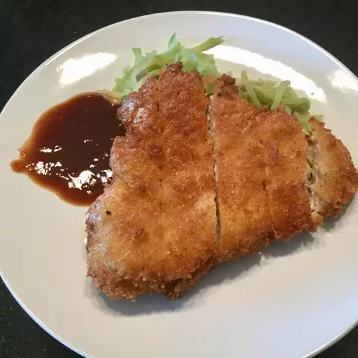

Ingredients
- 2 eggs
- 1 teaspoon milk
- ½ teaspoon minced garlic
- salt to taste
- ½ teaspoon pepper
- 1 cup vegetable oil for frying
- 8 thin cut boneless pork chops
- 1 ½ cups panko crumbs
Steps
- Mix the eggs
- Dip in the egg mixture
- Coat with panko
- Fry until golden brown